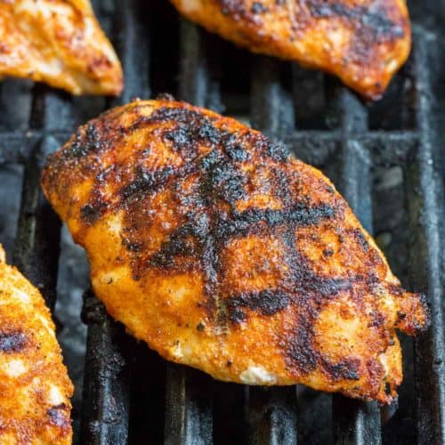

Grilled Chicken

Everyone consumes chicken(maybe not vegans) and there are so many ways to prepare it.
But the way that I will show you how to cook it is the tried and true method of human evolution.
Meat - fire - spices. That is everything you need.
Here are the essential ingredients
- Chicken Breast
- Cumin, paprika, salt, pepper, and garlic powder
- Lemon
One of the simplest recipes you can make within 15 minutes. Meal prepping with this grilled chicken breast recipe will take your gains
to the next level.
In order to make this delicious dish you can follow these 5 easy steps.
- Pound the chicken with the back of your knife and make sure it is at room temperature.
- Season the chicken with a myrid of spices, make sure the color of the chicken changes to a beautiful dark red after seasoning.
- Heat up the oil right before smoking point and lay your chicken down with another pan on top of it for 4 minutes. Flip and do it again.
- Garnish your beautiful and crispyyyy chicken with lemon and chow down with rice or a bowl of salad.